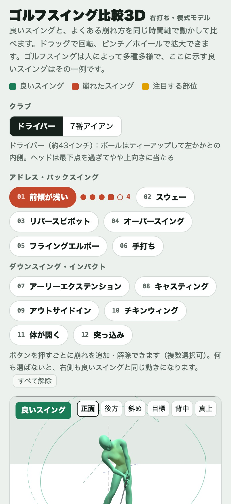
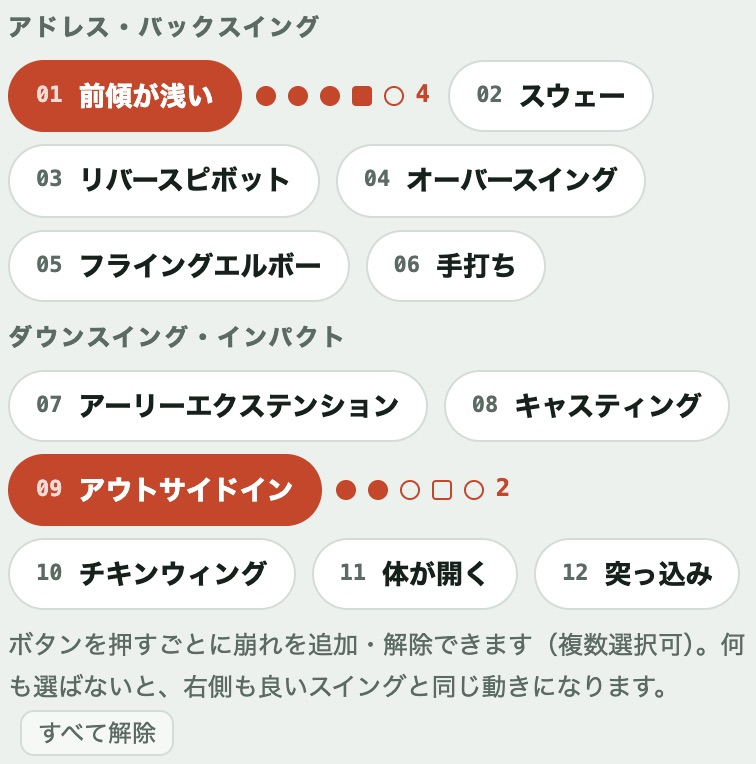
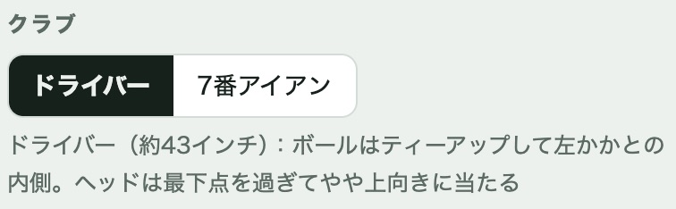
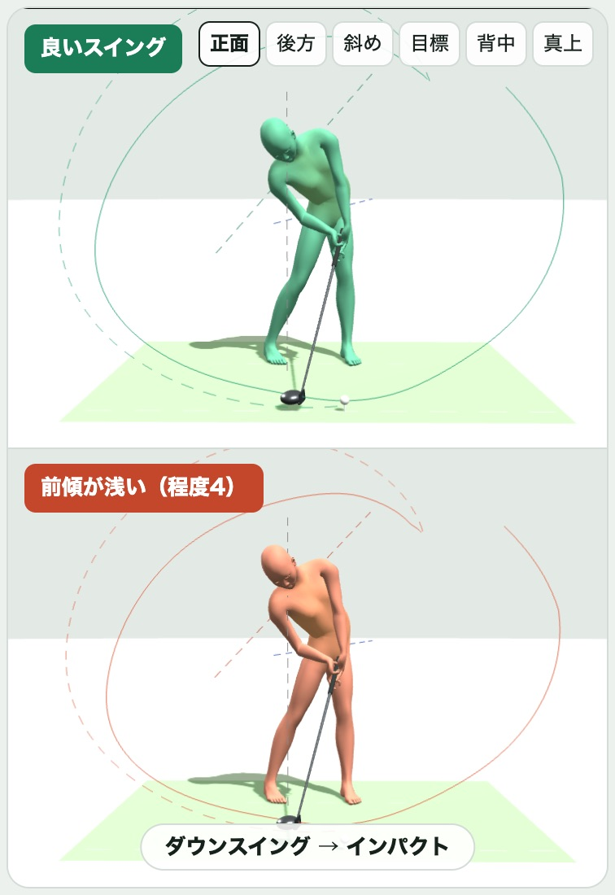
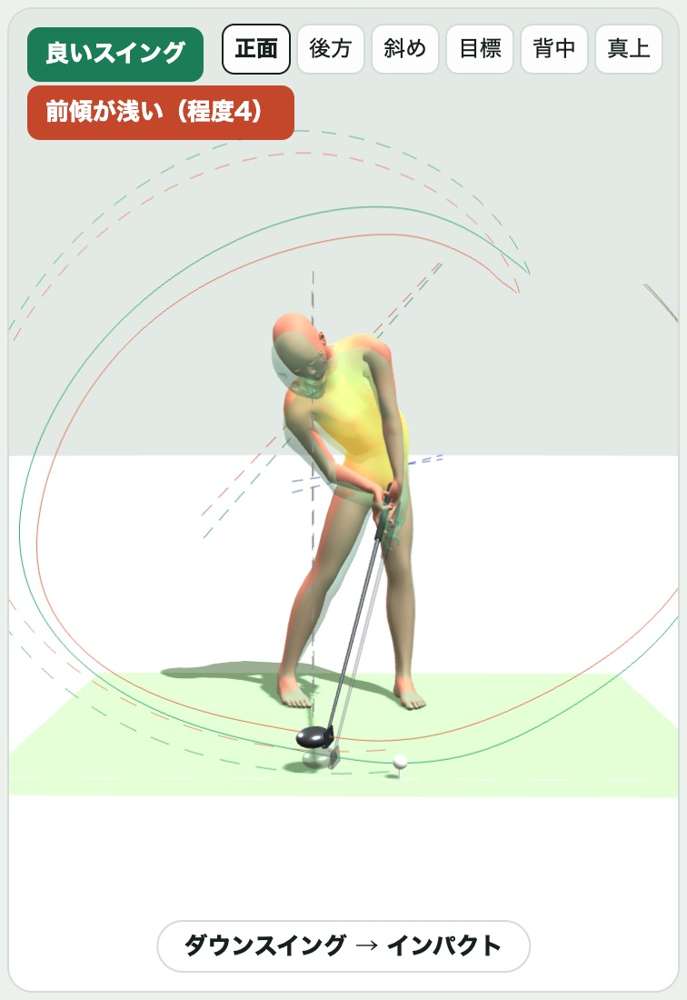
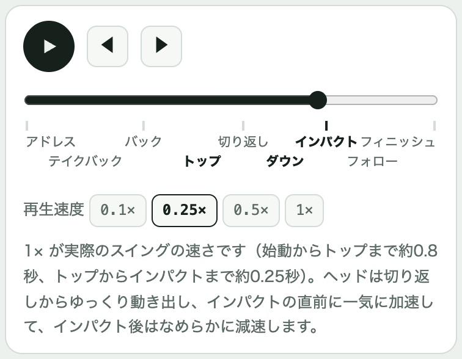
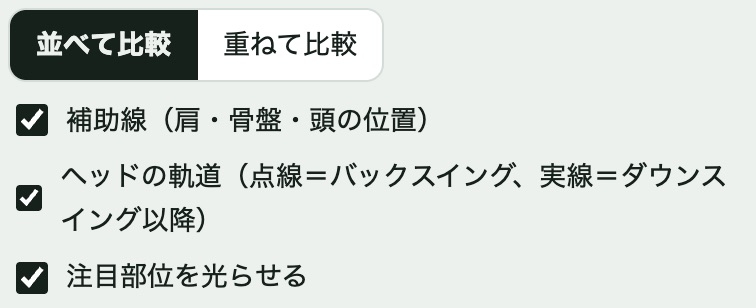
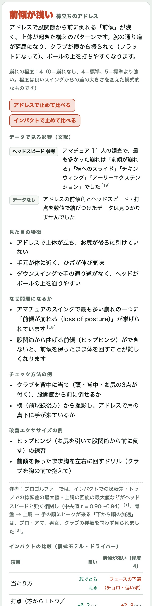
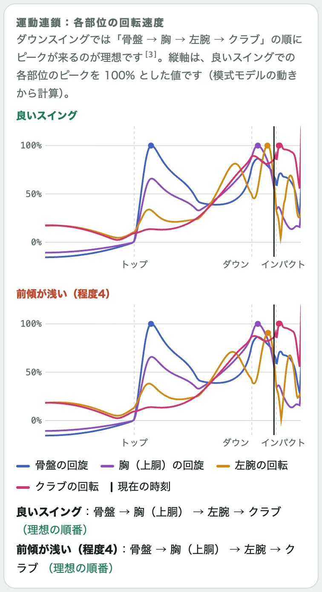

良いスイングと、よくある崩れ方を、同じ時間軸で3Dの人体モデル（右打ち・模式モデル）を動かして見比べるアプリです。この説明はバージョン 1.1.0 の画面で書いています。
画面は上から順に、次のように並んでいます（iPhone の縦画面。iPad や横画面では、説明欄が右側に並びます）。上下にスクロールして使います。

| 1. タイトルと色の見方 | 緑＝良いスイング、赤＝崩れたスイング、黄色＝注目する部位 |
|---|---|
| 2. クラブ | ドライバーと7番アイアンの切り替え |
| 3. 崩れのボタン | 比べたい崩れ方を選ぶ（全12種類）。選ぶと横に「程度」の点が出る |
| 4. 3Dの表示 | 上（iPad では左）が良いスイング、下（iPad では右）が選んだ崩れ。右上に見る向きのボタン、下に今の局面名 |
| 5. 表示の切り替え | 「並べて比較」「重ねて比較」と、補助線などの表示のオン・オフ |
| 6. 再生バー | 再生・一時停止、前後の局面へ、時間のスライダー、局面名、再生速度 |
| 7. 運動連鎖のグラフ | 体の各部位がどの順番で速く回っているか |
| 8. 説明欄 | 選んだ崩れの特徴・理由・チェック方法・エクササイズの例・文献のデータ（iPad では画面の右側） |
| 9. 使い方・このアプリについて | 画面のいちばん下。「使い方」でこのガイドを開けます。「このアプリについて」には版番号・ご注意・使用しているソフトウェア。無料版では「全機能を解放」も並びます |
崩れのボタンは、次のグループに分かれて並んでいます（全12種類）。

ボタンを押すと赤くなり（✓が付きます）、もう一度押すと解除されます。複数選ぶと、その崩れを重ね合わせた動きになります（例：「前傾が浅い」＋「アウトサイドイン」）。何も選ばないと、下のモデルも良いスイングと同じ動きになります。まとめて外すときは、ボタンの下の「すべて解除」を押します。
※複数選ぶことと、次の「程度」の変更は、全機能の解放後に使えます（無料版と全機能の解放）。
選んだボタンの横に、5つの点が出ます。塗りつぶされた点の数が「程度」で、右の数字が今の値です。
程度は「良いスイングからの差の大きさ」を変えたもので、軽い崩れから強い崩れまでを段階的に見せられます。崩れを複数選んだときは、それぞれ別に程度を変えられます。
アプリはダウンロード無料です。アプリ内課金（買い切り、¥500）で全機能が使えるようになります。
| 無料版 | 崩れは 01・02・03・07・08・09 の6種類。1つずつ選ぶ（別のボタンを押すと切り替わる）。程度は標準の 4 |
|---|---|
| 全機能 | 崩れの全12種類、複数の崩れの組み合わせ、程度 0〜5 の変更 |
無料版では、使えないボタンと程度の点に 🔒 が付きます。押すと購入の画面が開きます。画面のいちばん下の「全機能を解放」からも開けます。再生・見る向き・補助線・説明欄・運動連鎖のグラフは、無料版でもすべて使えます。

いちばん上の「クラブ」で、ドライバーと7番アイアンを切り替えられます。ボールの位置、前傾、スイングの形がクラブに合わせて変わり、下に一言の説明が出ます。崩れの選択はそのまま引き継がれます。


3D表示のすぐ下で切り替えます。

| ● 再生ボタン | 再生と一時停止。最後まで行ったら、もう一度押すと最初から再生します |
|---|---|
| ◀ ▶ | 前の局面・次の局面へ移動して止まります |
| スライダー | 指で左右に動かすと、好きな瞬間で止められます |
| 局面名 | アドレス・テイクバック・バックスイング・トップ・切り返し・ダウンスイング・インパクト・フォロースルー・フィニッシュ。押すとその局面で止まります。太字は特に大事な局面（トップ・ダウンスイング・インパクト）です |
| 再生速度 | 0.1×・0.25×・0.5×・1×。1× が実際のスイングの速さです（始動からトップまで約0.8秒、トップからインパクトまで約0.25秒）。まずは 0.25× でご覧ください。 |
「並べて比較」「重ねて比較」の横（または下）にあるチェックで、表示のオン・オフを切り替えます。

| 補助線（肩・骨盤・頭の位置） | 肩を結ぶ線・骨盤を結ぶ線と、頭の位置の目印を表示します。スウェーや体の開きの違いが見やすくなります。 |
|---|---|
| ヘッドの軌道 | クラブヘッドの通り道を表示します。点線がバックスイング、実線がダウンスイング以降です。アウトサイドインの比較などに。 |
| 注目部位を光らせる | 選んだ崩れで特に見てほしい部位を黄色く光らせます。 |

選んだ崩れについて、次の順に表示されます。何も選んでいないときは「基準にしている良いスイング」の要点が出ます。
崩れを複数選んだときは、崩れごとに説明が分かれ、名前を押すと開閉できます。

骨盤・胸（上胴）・左腕・クラブの回転の速さを、時間に沿って線で表示します。縦軸は、良いスイングでの各部位の一番速いところを 100% とした値です。
使えます。すべての機能がオフラインで動きます。
アプリを一度終了して（画面の下から上になぞり、アプリを上に払う）、開き直してください。直らない場合は、機種名と iOS の版を添えてお問い合わせください。
崩れのボタンの下の「すべて解除」を押すと、良いスイングどうしの比較に戻ります。
いいえ。人体の動きと角度は本アプリ独自の模式値で、特定の選手の動きを再現したものではありません。文献の数値は「データで見る影響」に出典を明記して紹介しています。
現在は右打ちのみです。
画面のいちばん下の「このアプリについて」に表示されます。
本アプリは指導・説明用の教材です。表示は単純化した模式図で、個々の方の診断や治療の代わりにはなりません。
ご意見・不具合のご報告：airio.creative@gmail.com
© 2026 AirIo Creative サポート プライバシーポリシー フォーム比較3D シリーズ